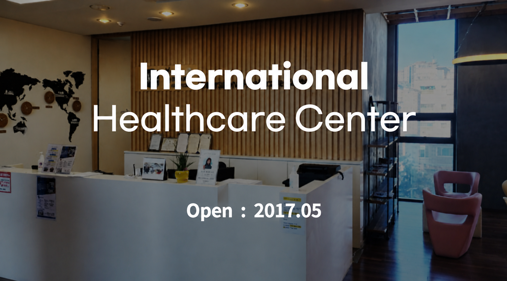
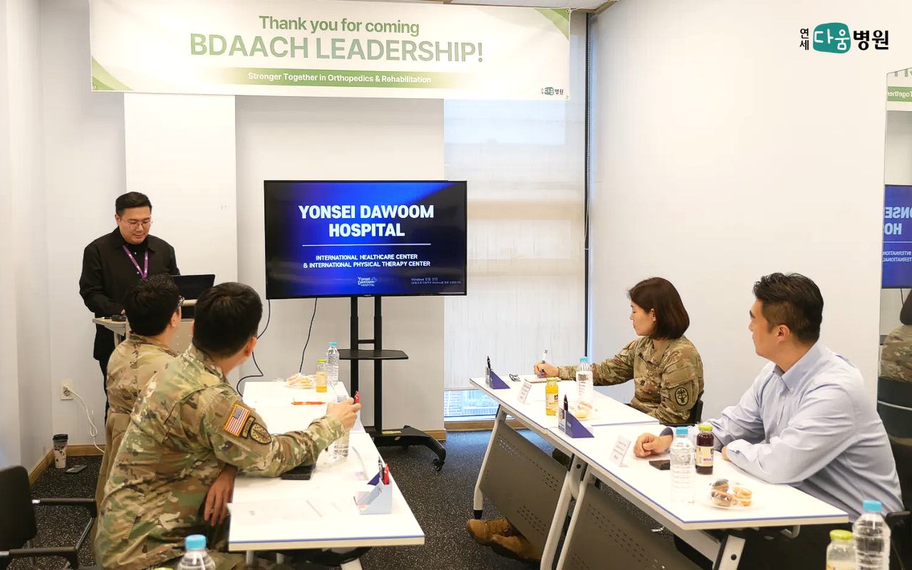

Translation support
English-friendly guidance for questions, care options, and visit preparation.
International patient support
Yonsei Dawoom Hospital helps patients prepare for care with translation support, reservation assistance, foreign insurance guidance, and visit information for Pyeongtaek.

The International Healthcare Center helps visitors understand services, prepare appointment details, and coordinate practical questions before arriving at the hospital.
Support options
Patients can start with the support option that matches their visit need, then request an appointment when ready.
English-friendly guidance for questions, care options, and visit preparation.
Help understanding general documentation and care coordination needs before your visit.
* We accept all foreign insurance.
Guidance on what information to provide when requesting an appointment or follow-up visit.
